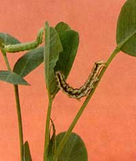
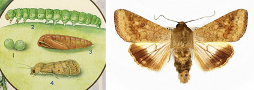

| Home |
| GROUNDNUT |
| 1. Aphids |
| 2. laef hopper |
| 3. thrips |
| 4. red hairy caterpiller |
| 5. leaf miner |
| 6. tobacco caterpiller |
| 7. gram pod borer |
| 8. pod borer (Ear Wig) |
| 9. pod bug |
| 10. Bud borer |
| 11. stem borer |
| 12. termites |
| 13. white grub |
| Questions |
| Download Notes |
PESTS OF GROUNDNUT :: Major Pests :: Gram Pod Borer
7. Gram pod borer: Helicoverpa armigera (Noctuidae: Lepidoptera)
Distribution and status: World wide
Host range: Cotton, sorghum, lablab, soybean, pea, safflower, chillies, groundnut, tobacco, okra, maize, tomato.
Damage symptoms: Small or large irregular feeding holes on the leaves. Presence of pale green or rose or brown or chocolate colored caterpillars with dorsal and lateral stripes and hairs on the body. Caterpillars also damage the fruiting bodies by entering into them.
 |
Bionomics: Adult is brown coloured moth with ‘V’ shaped speck on forewings and dull black border on the hind wing. Eggs are laid singly on host plant. The egg period is 5-7 days. Larva is greenish with dark brown to grey lines. Color varies with kind of host plant. The larval period is 14-20 days. It pupates in soil and pupal stage lasts for 10 days. Cannibalism is common among larvae.
 |
Management
- Set up light trap to attract and kill the moths.
- Set up pheromone traps @ 12 nos./ha to attract male moths.
- Release of egg parasite Trichogramma spp. and egg larval parasite Chelonus blackburnii.
- Apply Nuclear Polyhedrosis Virus(NPV) @ 250 LE/ha.
- Combined use of NPV of S. litura and H. armigera on groundnut indicated that single application of NPV of each pest at 250 LE/ha with crude sugar 2.5 kg/ha is highly effective.
- Spray endosulfan 35 EC 1000 ml or emamectin benzoate 5 SG 220 g or spinosad 45 SC 180-220 ml per ha in 375-500 L of water per ha